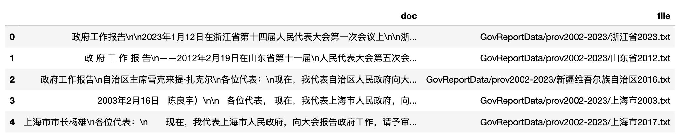
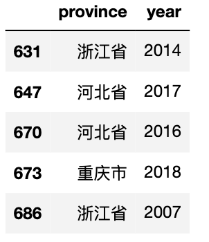

相关代码
一、数据集
1.1 数据简介
国级(guo wu yuan)工作报告1954-2023, 记录数70
省级zf工作报告2002-2023, 记录数713
市级zf工作报告2003-2023, 记录数5922
数据集100元， 加微信 372335839， 备注「姓名-学校-专业」。
1.2 文件树目录
|- 代码.ipynb
|- GovReportData
|-nation1954-2023
|-1954.txt
|-1955.txt
|-...
|-2022.txt
|-2023.txt
|-prov2002-2023
|-安徽省2001.txt
|-...
|-安徽省2023.txt
|-...
|-浙江省2023.txt
|-city2003-2023
|-安康市2003.txt
|-...
|-安庆市2003.txt
|-...
|-安庆市2023.txt
1.3 查看缺失数据
使用爬虫和人工搜集， 也不能保证数据的完整性， 下面给各位客官看下数据的缺失情况，方便大家使用数据时心里有数。
缺失的txt文件非常小，一般只有几个字节，而正常的报告至少是几十kb。只需要通过审查小于1kb的文件即可得知缺失的数据。
1.3.1 国-缺失情况
国家级(guo wu yuan)报告1954-2023，
import os
print('国级报告缺失: \n')
nation_files = [f'GovReportData/nation1954-2023/{year}.txt' for year in range(1954, 2024)]
for file in nation_files:
fsize = os.path.getsize(file)/1024 #kb
if fsize<1:
print(file.split('/')[-1].replace('.txt', ''))
Run
国级报告缺失:
1961
1962
1963
1965
1966
1967
1968
1969
1970
1971
1972
1973
1974
1976
1977
3.2 省-缺失情况
2002-2023,省份缺失情况
print('省级报告缺失: \n')
prov_files = [f'GovReportData/prov2002-2023/{file}'
for file in os.listdir('GovReportData/prov2002-2023')]
for file in prov_files:
fsize = os.path.getsize(file)/1024 #kb
if fsize<1:
print(file.split('/')[-1].replace('.txt', ''))
Run
省级报告缺失:
云南省2001
新疆维吾尔族自治区2001
重庆市2001
广西壮族自治区2001
天津市2001
青海省2001
湖南省2001
西藏自治区2001
湖北省2001
山西省2001
江西省2001
江苏省2001
辽宁省2001
宁夏回族自治区2001
3.3 市-缺失情况
2003-2023，市-缺失情况
print('市级报告缺失: \n')
data = dict()
prov_files = [f'GovReportData/city2003-2023/{file}'
for file in os.listdir('GovReportData/city2003-2023')]
for file in prov_files:
fsize = os.path.getsize(file)/1024 #kb
if fsize<1:
city = file.split('/')[-1].replace('.txt', '')[:-4]
year = file.split('/')[-1].replace('.txt', '')[-4:]
data.setdefault(city, [])
data[city] = data[city] + [year]
for key,value in data.items():
print(key, value)
Run
市级报告缺失:
苏州市 ['2003']
酒泉市 ['2005', '2004', '2003']
资阳市 ['2004', '2003']
双鸭山市 ['2008', '2009', '2014', '2003', '2007', '2012', '2006', '2010', '2004', '2005', '2011']
七台河市 ['2005', '2004', '2006', '2003']
张家口市 ['2004', '2005', '2007', '2006', '2003', '2009']
抚州市 ['2004', '2010', '2005', '2013', '2007', '2006', '2003', '2009']
阳泉市 ['2008', '2003', '2007', '2006', '2010', '2004', '2005']
湘潭市 ['2005', '2004', '2006', '2007', '2003']
新余市 ['2009', '2008', '2003', '2007']
克拉玛依市 ['2011', '2005', '2004', '2010', '2006', '2012', '2013', '2007', '2003', '2014', '2015', '2009', '2008']
铜陵市 ['2005', '2004', '2007', '2003']
宣城市 ['2003']
昭通市 ['2007', '2006', '2004', '2005', '2003', '2008', '2009']
忻州市 ['2003', '2005', '2004', '2006', '2008']
永州市 ['2003', '2004', '2005', '2006', '2008']
孝感市 ['2004', '2003']
定西市 ['2009', '2003', '2006', '2004', '2005']
滁州市 ['2006', '2004', '2005', '2003']
湖州市 ['2008', '2003', '2013', '2007', '2005', '2004']
河池市 ['2003']
呼和浩特市 ['2005', '2004', '2003']
遵义市 ['2005', '2004', '2003']
成都市 ['2004', '2005', '2003']
南充市 ['2003', '2005', '2004']
海东市 ['2008', '2009', '2003', '2010', '2004', '2005', '2011', '2007', '2012', '2006']
石家庄市 ['2003', '2005', '2004']
运城市 ['2003']
黄山市 ['2005', '2004', '2003']
北海市 ['2003', '2006', '2005', '2004']
漳州市 ['2004']
六安市 ['2003', '2007']
安康市 ['2003', '2004']
汕尾市 ['2003', '2004', '2005']
合肥市 ['2003', '2004', '2005']
宜昌市 ['2003', '2010', '2004', '2022']
乌兰察布市 ['2008', '2009', '2007', '2006', '2010', '2004', '2005', '2003']
衡水市 ['2008', '2009', '2007', '2006', '2010', '2004', '2011', '2003']
金昌市 ['2011']
沧州市 ['2007', '2009', '2008']
广安市 ['2005', '2013']
吉林市 ['2009', '2008', '2005', '2010', '2004', '2003']
临沧市 ['2003']
潍坊市 ['2003']
杭州市 ['2004']
淮南市 ['2003', '2005', '2004', '2007']
吉安市 ['2004', '2005', '2006', '2003', '2008', '2009']
衢州市 ['2004', '2005', '2007', '2006', '2012', '2003', '2008', '2009']
邵阳市 ['2004', '2005', '2006', '2003', '2008', '2009']
乌鲁木齐市 ['2008', '2009', '2003', '2007', '2013', '2012', '2004', '2005', '2011']
来宾市 ['2008', '2009', '2003', '2013', '2007', '2012', '2004', '2010', '2011']
银川市 ['2007', '2006', '2004', '2005', '2003', '2008', '2009']
淮北市 ['2005', '2004', '2003']
镇江市 ['2009', '2003']
兰州市 ['2003', '2004', '2005']
菏泽市 ['2003']
廊坊市 ['2003', '2004', '2011']
无锡市 ['2003', '2004']
丽江市 ['2003', '2014', '2011', '2005', '2013', '2006', '2012', '2008']
柳州市 ['2003']
丹东市 ['2003', '2004', '2005']
鹤岗市 ['2013']
唐山市 ['2004', '2003']
渭南市 ['2003', '2005', '2004']
徐州市 ['2003']
绵阳市 ['2003', '2004']
百色市 ['2009', '2008', '2003', '2004', '2006', '2012']
鸡西市 ['2004', '2003']
昆明市 ['2003', '2004']
巴彦淖尔市 ['2008', '2003', '2004', '2005', '2006']
上饶市 ['2003', '2004']
福州市 ['2005', '2004', '2003']
蚌埠市 ['2003', '2004']
天水市 ['2003', '2004']
秦皇岛市 ['2009', '2003', '2004', '2005']
萍乡市 ['2009', '2003', '2013', '2006', '2012']
吕梁市 ['2003', '2004']
内江市 ['2003']
南平市 ['2007', '2006', '2004', '2005', '2009']
拉萨市 ['2004', '2006']
营口市 ['2003']
鹰潭市 ['2003']
信阳市 ['2003']
中卫市 ['2003']
宝鸡市 ['2005', '2004', '2003']
佳木斯市 ['2004', '2005', '2007', '2006', '2003']
衡阳市 ['2004', '2005', '2006', '2003']
绥化市 ['2004', '2006']
临汾市 ['2006', '2005', '2004', '2003']
安庆市 ['2004', '2003']
怀化市 ['2005', '2004', '2006', '2003', '2015']
陇南市 ['2003', '2005', '2004', '2006']
保山市 ['2003', '2004']
石嘴山市 ['2004', '2003']
赤峰市 ['2003', '2004']
郴州市 ['2003', '2006', '2004']
景德镇市 ['2005', '2004', '2003']
梅州市 ['2003']
盐城市 ['2004', '2005', '2003']
钦州市 ['2003', '2004']
白银市 ['2003', '2005', '2004']
茂名市 ['2004', '2003']
贵港市 ['2013']
乌海市 ['2003', '2004']
泉州市 ['2003']
随州市 ['2006', '2007']
赣州市 ['2006']
商洛市 ['2003']
大庆市 ['2003']
临沂市 ['2003']
荆州市 ['2003']
玉林市 ['2003']
承德市 ['2006', '2005', '2004', '2003']
巴中市 ['2003', '2005', '2004']
西宁市 ['2006', '2011', '2005', '2004', '2003']
普洱市 ['2003', '2004']
遂宁市 ['2004', '2003']
自贡市 ['2005', '2006', '2003']
德州市 ['2005', '2004', '2003']
葫芦岛市 ['2003']
德阳市 ['2004', '2005', '2003']
固原市 ['2003', '2004', '2010', '2005', '2007']
平凉市 ['2006', '2004', '2005', '2003']
阜阳市 ['2003', '2005', '2004']
襄阳市 ['2004']
淮安市 ['2003', '2010', '2004']
咸宁市 ['2003', '2005', '2004']
汉中市 ['2004', '2003']
齐齐哈尔市 ['2004', '2005', '2003']
咸阳市 ['2003', '2004']
辽源市 ['2003', '2004', '2011', '2005']
达州市 ['2003']
娄底市 ['2004', '2003']
铜川市 ['2003', '2004', '2005']
亳州市 ['2003']
长沙市 ['2003']
东莞市 ['2004']
贵阳市 ['2003']
呼伦贝尔市 ['2004']
庆阳市 ['2003']
二、读取数据
txt比较适合查看，但不太适合做数据分析，最好能汇总为excel这种表数据， 每行一条记录， 每列代表一个字段。网上的汇总方法都很复杂的，至少要十几行代码，而且肯定会用到for循环，对编程小白非常不友好！
使用大邓的目前开源的cntext两行就能搞定， cntext有付费的cntext2.0.0，但免费的就够用了。 打开命令行，执行安装命令 pip3 install cntext
2.1 ct.read_files
cntext内置ct.read_files函数，可以处理一切多文件汇总为dataframe。
ct.read_files(fformat='*.*', encoding='utf-8', recursive=True, **kwargs)
参数
-
fformat 文件路径识别模式,
*.*意味着识别一切文件格式， -*.txt识别所有txt -*.xls识别所有xls -*.pdf识别所有pdf， -data/*.txt识别data文件夹内所有txt文件 -data/*/*.txt识别data文件夹内所有子文件夹内的所有txt文件 -
encoding 文件编码方式， 一般情况不用设置。但是当csv、txt的文件编码不是utf-8时，需要传参。
-
recursive 默认遍历搜寻某文件夹下所有的文件
目前cntext支持txt、csv、xlsx、xls、docx、pdf等常用的文件，返回dataFrame。 每个文件对应dataframe中的一行。
import cntext as ct
#识别 GovReportData/nation1954-2023 内所有的txt
nation_df = ct.read_files(fformat='GovReportData/nation1954-2023/*.txt')
print('国级报告数: ', len(nation_df))
nation_df.head()
Run
国级报告数: 70
#识别 GovReportData/prov2002-2023 内所有的txt
prov_df = ct.read_files(fformat='GovReportData/prov2002-2023/*.txt')
print('省级报告数: ', len(prov_df))
prov_df.head()
Run
省级报告数: 713

#识别 GovReportData/city2003-2023 内所有的txt
city_df = ct.read_files(fformat='GovReportData/city2003-2023/*.txt')
print('市级报告数: ', len(city_df))
city_df.head()
Run
市级报告数: 5922
三、数据清洗
3.1 构造year字段
分别给国、省、市三个df构建对应的year字段。国家级file字段
file = 'GovReportData/nation1954-2023/2002.txt'
可以看到，只要用 file.split('/')[-1].replace('.txt', '') 即可得到 2002 。用 apply 方法对 file 使用 lambda 函数，得到 year 字段。
nation_df['year'] = nation_df['file'].apply(lambda f: f.split('/')[-1].replace('.txt', ''))
nation_df.head()
参照类似的思路，省、市略有不同，代码如下
prov_df['year'] = prov_df['file'].apply(lambda f: f.split('/')[-1].replace('.txt', '')[-4:])
city_df['year'] = city_df['file'].apply(lambda f: f.split('/')[-1].replace('.txt', '')[-4:])
3.2 构造省、市字段
分别构建省市字段,
#省
file = 'GovReportData/prov2002-2023/浙江省2023.txt'
file = 'GovReportData/prov2002-2023/新疆维吾尔族自治区2016.txt'
#市
file = 'GovReportData/city2003-2023/宜昌市2015.txt'
可以看到，只要用 file.split('/')[-1].replace('.txt', '')[:-4] 即可分别得到 浙江省、 新疆维吾尔族自治区、宜昌市。用 apply 方法对 file 使用 lambda 函数，得到 prov 、city 字段。
prov_df['prov'] = prov_df['file'].apply(lambda f: f.split('/')[-1].replace('.txt', '')[:-4])
city_df['city'] = city_df['file'].apply(lambda f: f.split('/')[-1].replace('.txt', '')[:-4])
city_df.head()
四、 文本分析
4.1 国-词频
计算总词语数、某类词出现的次数，计算各政府提及【环保】的频率
import jieba
nation_df['word_num'] = nation_df['doc'].fillna('').apply(lambda text: len(jieba.lcut(text)))
nation_df['env_num'] = nation_df['doc'].fillna('').str.count('环保|环境|污染|青山|绿水')
nation_df['env_ratio'] = nation_df['env_num']/nation_df['word_num']
nation_df.head()
4.2 可视化
import matplotlib.pyplot as plt
import matplotlib
import matplotlib_inline
matplotlib_inline.backend_inline.set_matplotlib_formats('png', 'svg')
import scienceplots
import platform
import pandas as pd
import numpy as np
import jieba
plt.style.use(['science', 'no-latex', 'cjk-sc-font'])
system = platform.system() # 获取操作系统类型
if system == 'Windows':
font = {'family': 'SimHei'}
elif system == 'Darwin':
font = {'family': 'Arial Unicode MS'}
else:
font = {'family': 'sans-serif'}
matplotlib.rc('font', **font) # 设置全局字体
plt.figure(figsize=(12, 5))
plt.plot(nation_df['year'], nation_df['env_ratio'])
plt.title('国级报告中「环保概念词」提及频率折线图(1954-2023)')
plt.show()
大家应该都学过正泰分布中， 数据中大多数的记录会落在 均值+-标准差 范围内，

这里设置 top_nation_mask、bottom_nation_mask ，分别识别到最重视环保的年份、最不重视环保的年份
top_nation_mask = nation_df['env_ratio'].mean() + nation_df['env_ratio'].std()
bottom_nation_mask = nation_df['env_ratio'].mean() - nation_df['env_ratio'].std()
print('最重视环保的年份')
print(nation_df[nation_df['env_ratio']>top_nation_mask].year.values)
print()
print('最忽视环保的年份')
print(nation_df[nation_df['env_ratio']<bottom_nation_mask]['year'].values)
Run
最重视环保的年份
['2016' '2017' '2003' '2015' '2001' '2005' '2007' '2006' '2023' '2021'
'2019']
最忽视环保的年份
['1959' '1964' '1958' '1960' '1975' '1978' '1979' '1985' '1981' '1956'
'1957' '1980' '1955' '1954' '1983']
可以看到进入21世纪，国家对环保重视从报告中就能看出。而在前期，因为生存是首要解决的，对环境保护的认识事不足的。
4.2 省-词频
计算总词语数、某类词出现的次数，计算各省提及【环保】的频率。因为省份的记录有770条，现在咱们把条件变严格，
top = mean+3*std,
bottom = mean-2std
大家可以自己设置条件的严格程度
prov_df['word_num'] = prov_df['doc'].fillna('').apply(lambda text: len(jieba.lcut(text)))
prov_df['env_num'] = prov_df['doc'].fillna('').str.count('环保|环境|污染|青山|绿水')
prov_df['env_ratio'] = prov_df['env_num']/prov_df['word_num']
top_prov_mask = prov_df['env_ratio'].mean() + 3*prov_df['env_ratio'].std()
bottom_prov_mask = prov_df['env_ratio'].mean() - 2*prov_df['env_ratio'].std()
print('最重视环保的省(年份)')
prov_df[prov_df['env_ratio']>top_prov_mask][['prov', 'year']]

prov_df[prov_df['env_ratio']<bottom_prov_mask][['prov', 'year']]
重视环保结果挺合理的， 某人曾在浙江任职过，对环保比较重视，近年来浙江也比较重视环保，是真的很早就执行，环保搞得很好。而河北，笔者家乡，主要是跟钢铁产业关停并转，守卫di都蓝天有很大关系。
比较忽视环保， 或者不怎么提及环保概念的省份， 也跟经济发展水平有一定关系，主要是重工业不发达， 自身自然的环境条件较好。
4.5 保存结果
将初步整理的结果保存到csv中，
nation_df.to_csv('nation_report1954-2023.csv', index=False)
prov_df.to_csv('prov_report2002-2023.csv', index=False)
city_df.to_csv('city_report2003-2023.csv', index=False)
更多内容可在大邓博客 textdata.cn 中寻找相关代码。
五、获取数据
数据集100元， 加微信 372335839， 备注「姓名-学校-专业」。